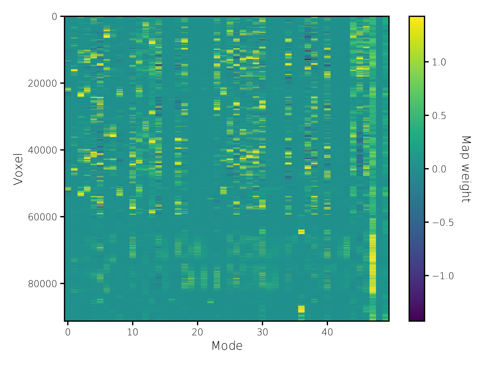
Group maps
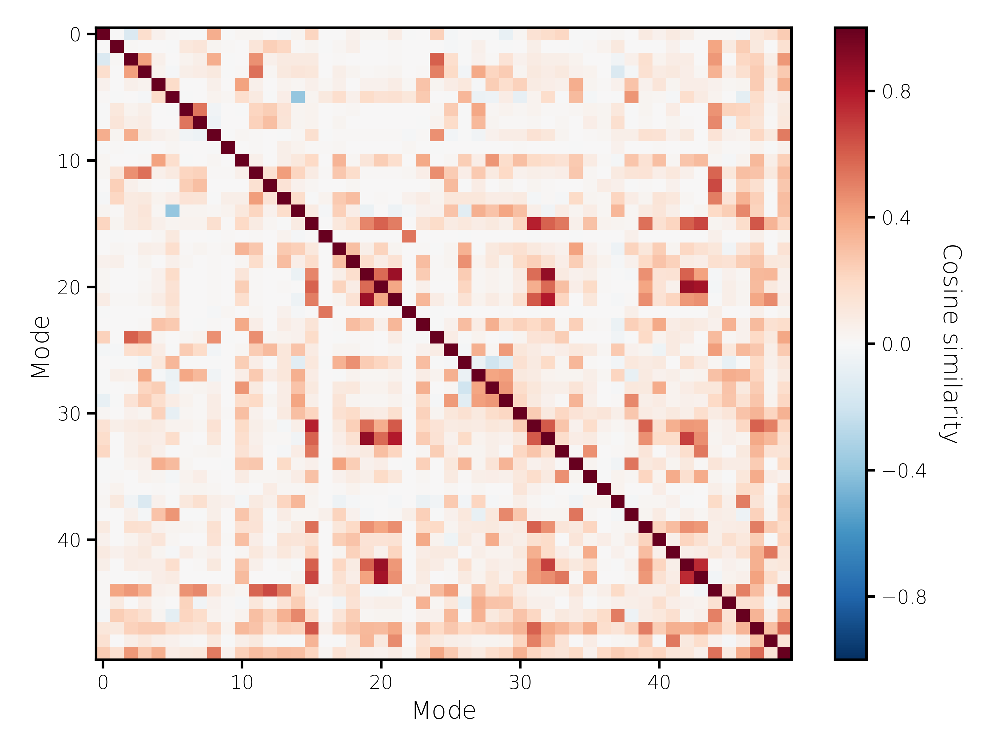
Similarity between group maps
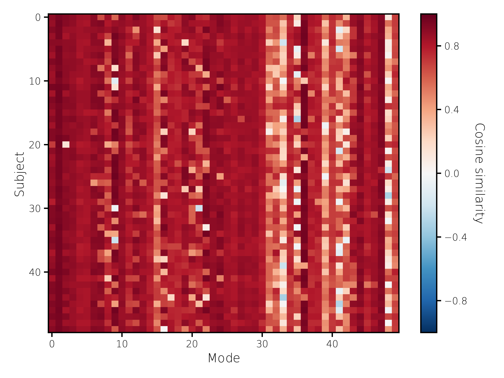
Similarity between the group and subject maps
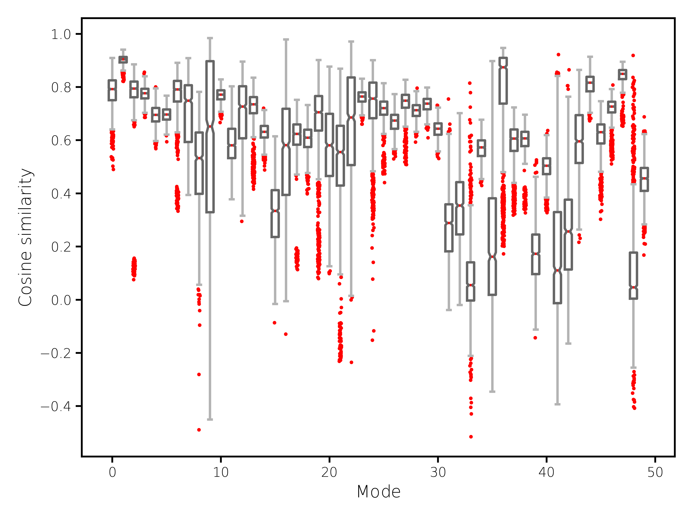
Similarity between the subject maps, calculated for all
possible pairs of subjects
Amplitudes
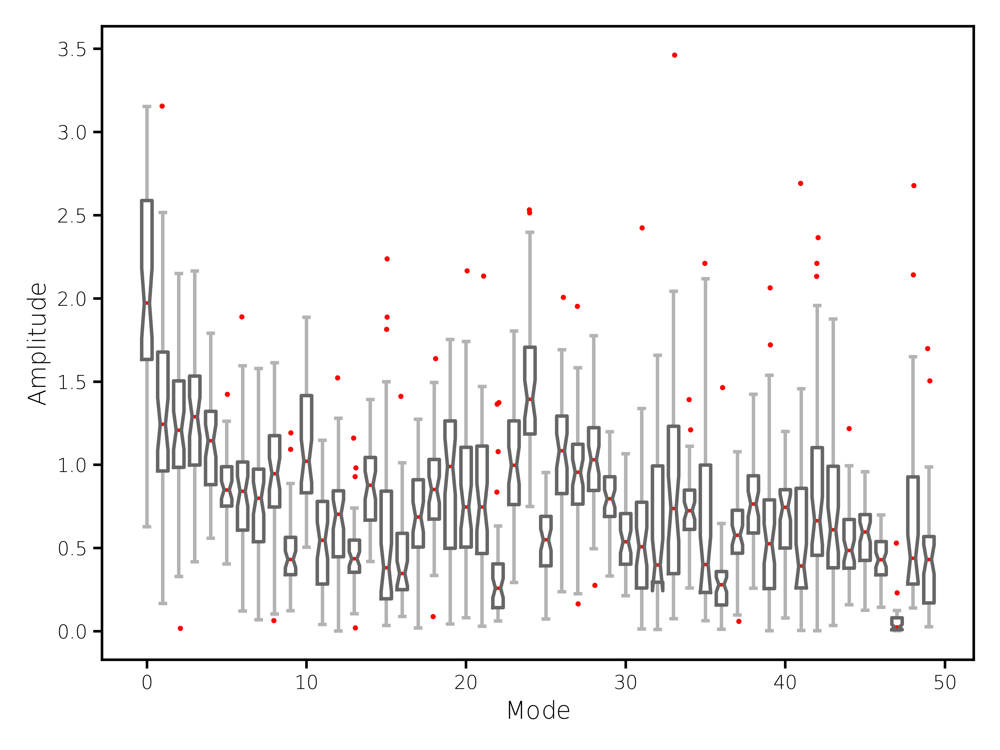
Mode amplitudes
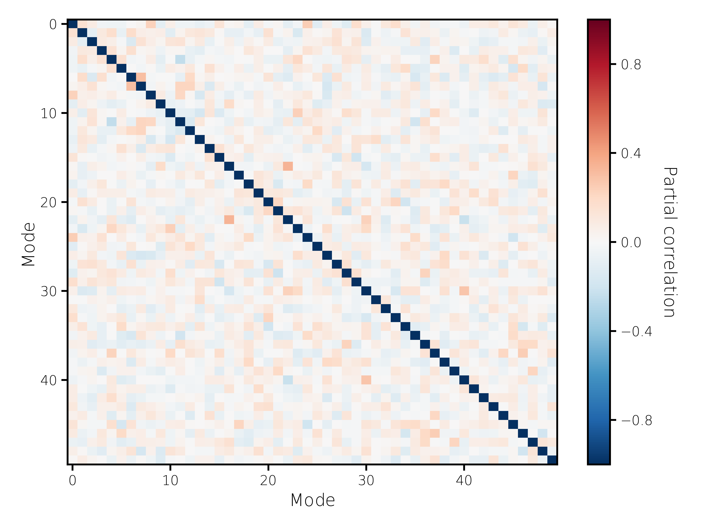
Posterior partial correlations between mode amplitudes
Time courses
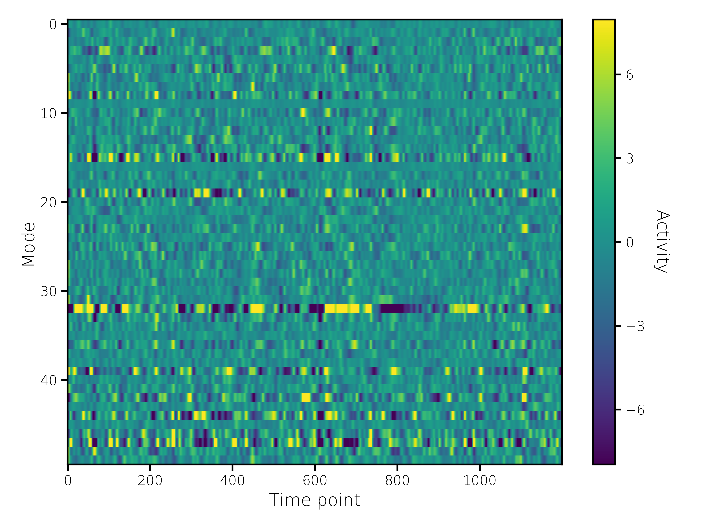
All time courses from subject
361234, run R2_LR
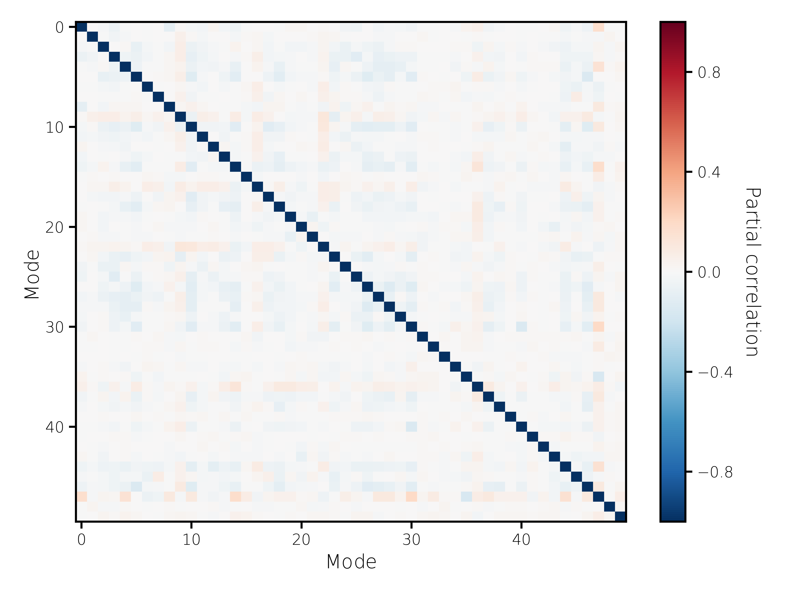
Group temporal network matrix
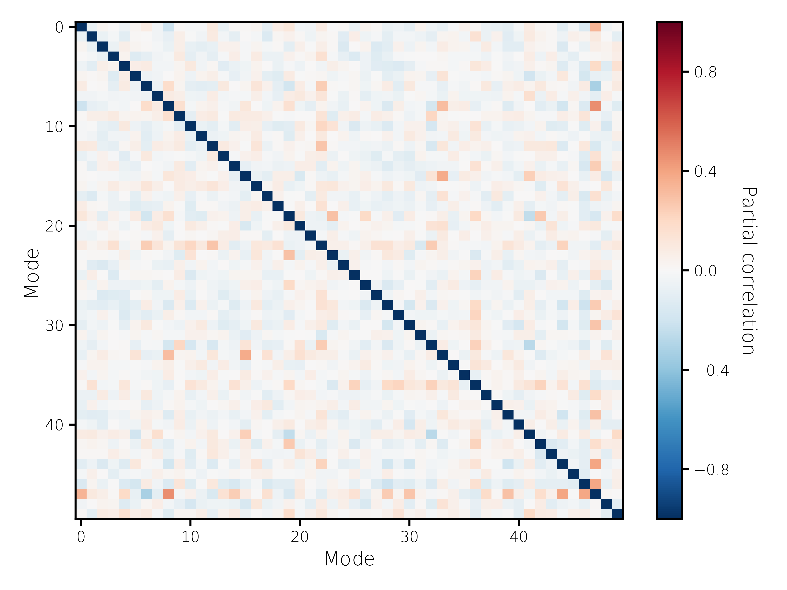
Example temporal network matrix (subject
361234, run R2_LR)
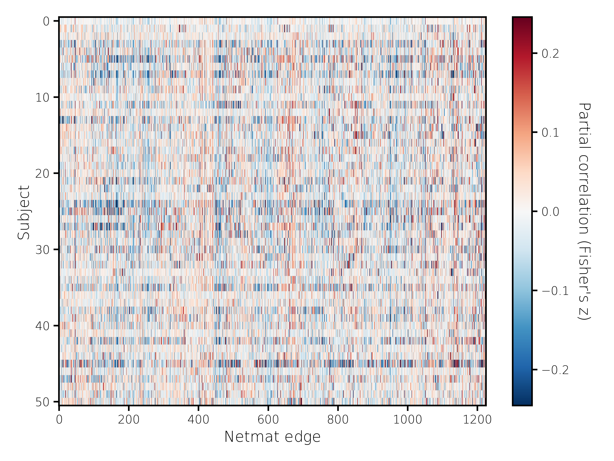
Unwrapped temporal network matrices
The group network matrix (or matrices)
is included as the first row.
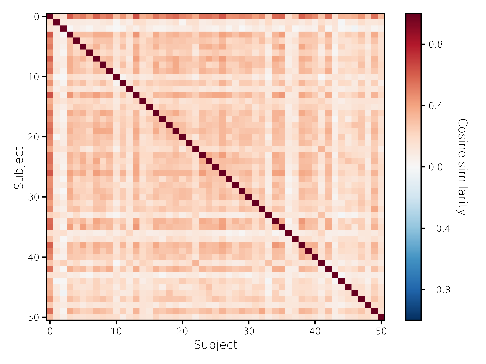
Similarity between the unwrapped temporal network matrices
As above, the group network matrix
(or matrices) is included as the first row/column.